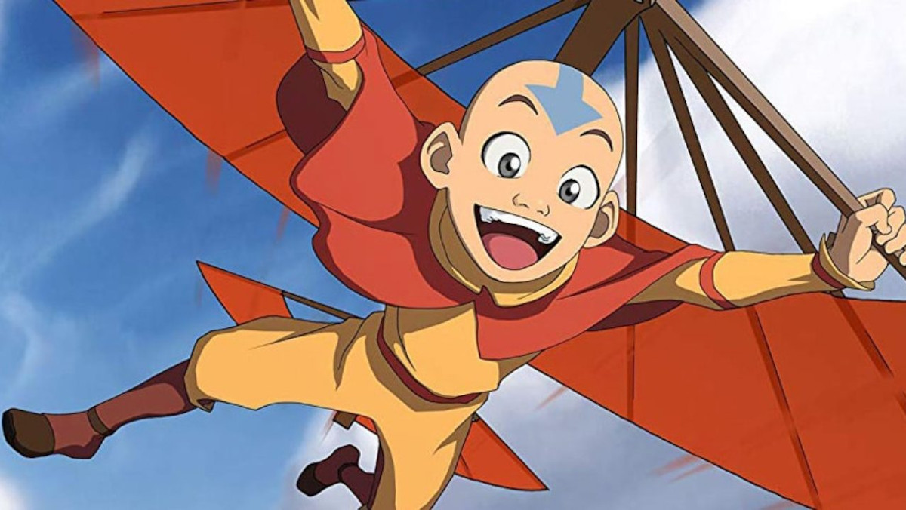
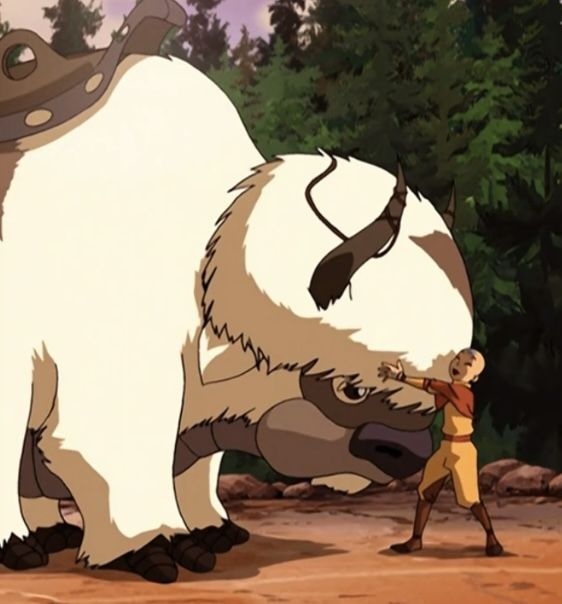

Air Nomads
Air Nomads is the collective term for the monastic order of men and women who practice the discipline of airbending and the pacifistic ethics of their theocratic society. One of the four nations, the Air Nomads were wanderers by definition, but had four air temples, one located at each corner of the globe, found atop mountain ranges and under cliffs, in the northern Earth Kingdom and on three remote islands, all of which were hard for outsiders to reach. Unlike the other nations, those born to the Air Nomads were, without any seen exception, all benders due to the high level of spirituality of their people.The Air Nomads were a peaceful race who were wiped out by the Fire Nation. They lived in large temples and travelled the world on flying bison. They were the most spiritual of all the cultures and lived in harmony with nature.
Their culture valued both altruism and detachment from wealth and worldly affairs, and their relationship with the other nations varied between different eras. In some periods, they were almost completely isolationist in fear of being led astray by the often violent paths of other nations, while in other ages, they forged close ties with foreign governments in order to provide aid and help as many people as they could. The Air Nomads have the smallest population of the four nations in the world. They had a small economy, based entirely on limited agriculture. The population of the Air Nomads was small compared to even the Water Tribe and was far smaller than either of the world's two major powers, the Fire Nation and the Earth Kingdom.
Air Nomad Cast
|  | Aang: The protagonist of the original series and the current Avatar, a cyclically reincarnating being who maintains world balance. Aang often acts in a fun-loving, carefree manner. His pacifism and vegetarianism are primary traits of Buddhism. The creators intended Aang to "defeat enemies with his wits" and be a "trickster hero". Though Aang is often frivolous and enthusiastic, he becomes serious during a crisis.In the original series, Katara and Sokka rescue Aang from a century of suspended animation due to being frozen in an iceberg. |
|  | Appa: Aang's male flying bison, animal guide and spirit companion. He is Aang's best friend and serves as the group's mode of transport around the world. He can fly and can use his tail to create powerful gusts of air. According to Aang, flying bisons were the first Airbenders. The show's creators, Michael Dante DiMartino and Bryan Konietzko, have described Appa's appearance as a cross between a bison and a manatee. He is known to shed his coat at the end of winter. |